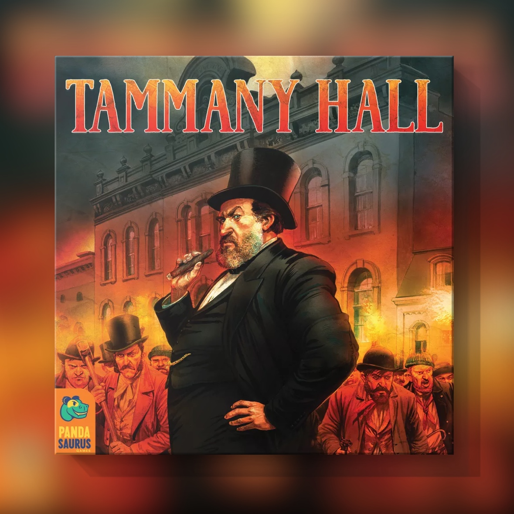

Tammany Hall (2007)
Sales alcalde y repartes los cuchillos

Lo digo ya: Tammany Hall me encanta. Lo he jugado más de diez veces y me ha dado partidas épicas.
Lo diseñó Doug Eckhart en 2007, y la edición que se encuentra hoy es la de Pandasaurus, de 2020. Estás en la Nueva York de mediados del siglo XIX, la de Boss Tweed, y quieres ser alcalde. Mandas jefes de distrito a los barrios del sur de Manhattan, colocas a los inmigrantes que van llegando al puerto y cada comunidad te lo devuelve en favores. Cada cuatro años hay elecciones, distrito por distrito, y quien gana más distritos se queda la alcaldía.
Las reglas se explican en un rato. En tu turno pones dos jefes, o pones uno y asientas a un inmigrante, que te da un favor de su comunidad. En las elecciones los favores se pujan a puño cerrado: todos saben cuántos tienes, nadie sabe cuántos vas a gastar, y los que se pujan se pierden ganes o no. Ahí se decide casi todo. O quemas favores para llevarte un distrito o te los guardas para el siguiente, sabiendo que también desempatan la alcaldía y dan puntos al final.
Es un juego muy temático, y eso se ve en cómo funcionan las cosas, no en lo bonito que sea el tablero. Ayudas a un irlandés a instalarse y los irlandeses te deben una, que es lo que hacía Tammany Hall: buscar casa, trabajo y papeles a los recién llegados a cambio de su voto. Ese favor irlandés solo lo puedes gastar en los distritos donde viven irlandeses, porque el voto de cada comunidad está en su barrio. Los inmigrantes esperan en Castle Garden, que fue el centro de recepción real antes de Ellis Island, y el mapa es el sur de Manhattan con su numeración de distritos. Hasta los italianos llegan tarde, como en la historia: al empezar no hay ninguno en el tablero y solo pueden salir de la bolsa.
Donde más se nota el tema es en la alcaldía. El alcalde se lleva los puntos y juega primero, pero tiene que repartir los cargos de la ciudad entre los demás, y esos cargos se usan contra él. Es el clientelismo de Tammany, el que gana coloca a la gente en los puestos, solo que aquí colocas a tus enemigos. Le das la jefatura de policía a quien no debías y te quita el único alemán del distrito donde pensabas gastar tus favores alemanes. Si compensa ser alcalde pronto o es mejor esperar, sinceramente todavía no lo tengo claro.
Encima va la negociación. El reglamento de 2020 te anima a pactar en cualquier momento, pero los favores no se pueden regalar y ninguna promesa obliga. Lo único que puedes ofrecer es dónde vas a poner tus piezas, a quién vas a difamar o qué cargo vas a dar si sales alcalde. En nuestras mesas eso se traduce en negociar a cara de perro y con muy mala baba: «si me pones un jefe en el cuatro, te difamo», «si salgo alcalde, te doy la policía». Cualquiera de las dos puede ser mentira, y el otro lo sabe.
Eso sí, yo solo lo jugaría a cinco. Con cinco el mapa está entero desde el primer año y el alcalde tiene que repartir los cuatro cargos, así que no queda ningún poder sin dueño. Con menos, el mapa se va abriendo por fases, y a tres sobran dos cargos y el alcalde puede dejar vacíos los que no le convengan. Para mí la gracia está en que todos tengan algo con lo que hacerte daño.
Si después te quedas con ganas de Tweed, Gangs of New York, de Scorsese, encaja con el juego como pocas películas. Es un peliculón, con un Daniel Day-Lewis escandaloso y Jim Broadbent haciendo de Tweed.
En Tammany Hall hay que hablar con todo el mundo y no fiarse de nadie, que es más o menos lo que pasaba en la Nueva York de Tweed.
De Tammany Hall hablamos largo y tendido en el episodio 4x02 de La Contralúdica:
Ficha técnica
- Título original: Tammany Hall
- Diseño: Doug Eckhart
- Editorial: StrataMax Games (2007); edición actual de Pandasaurus Games (2020)
- Jugadores: 3 a 5
- Duración: unos 90 minutos